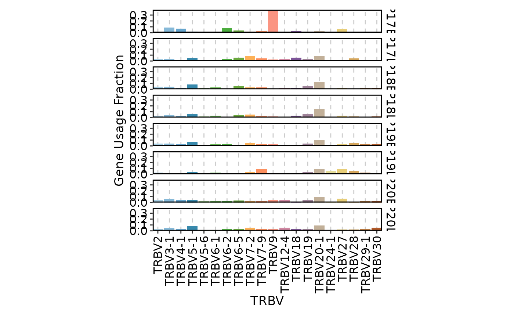
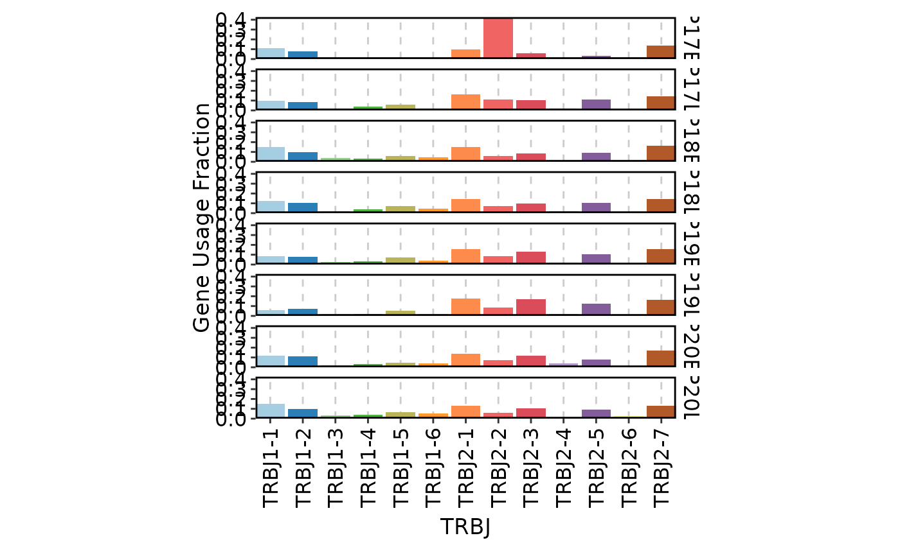
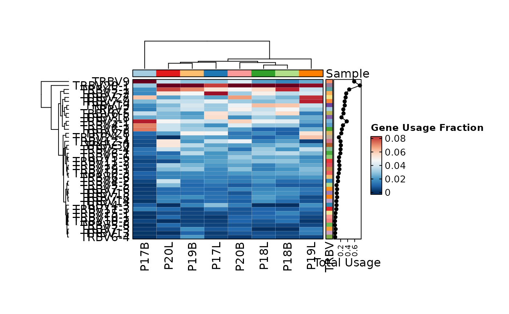
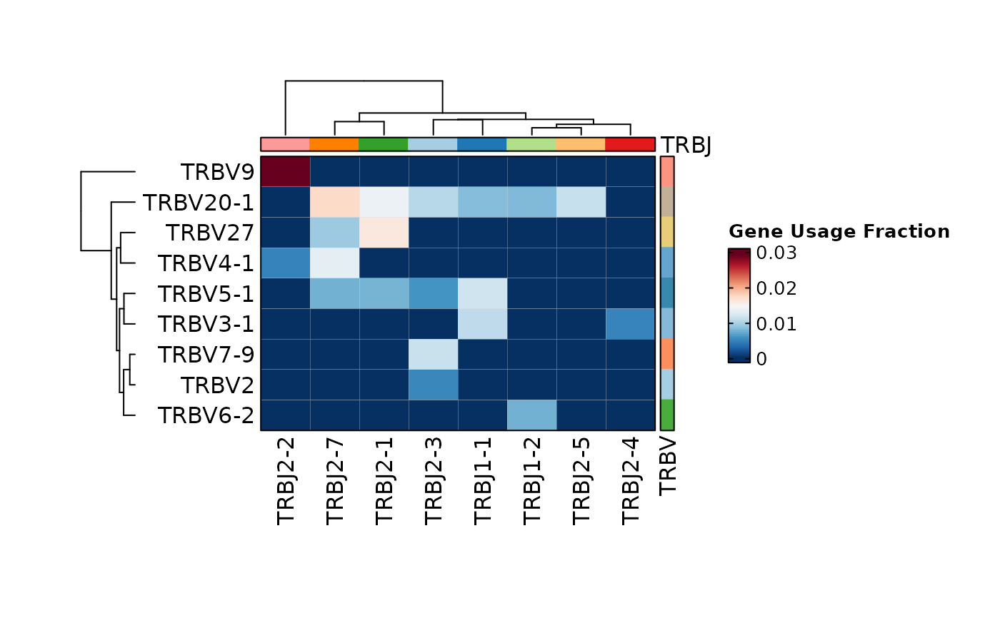
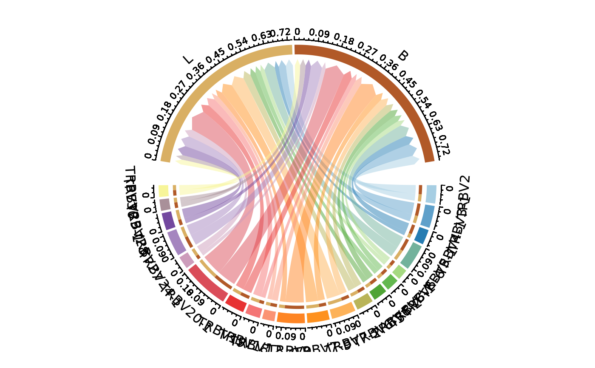
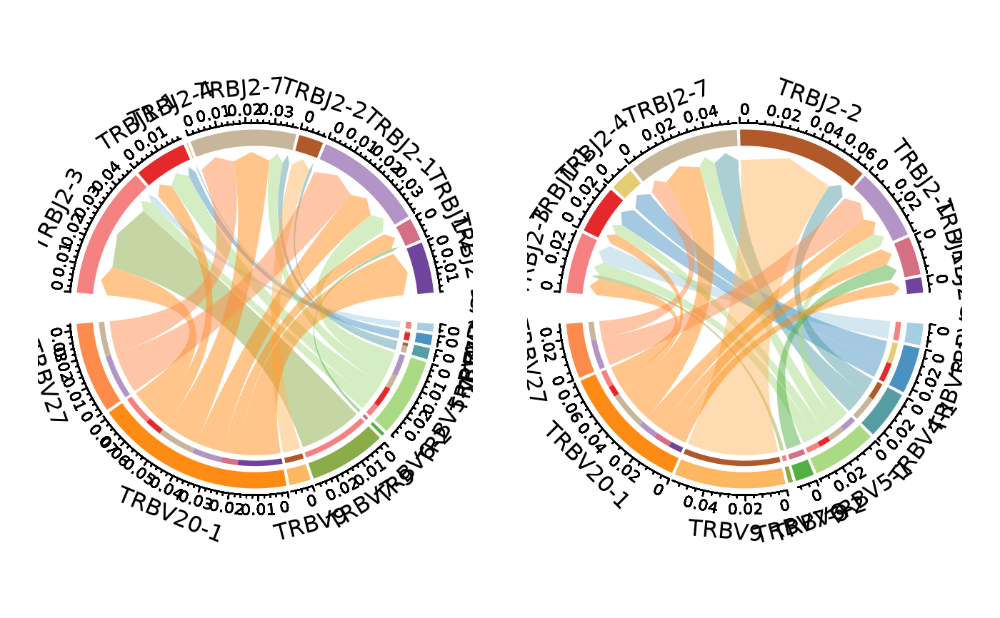
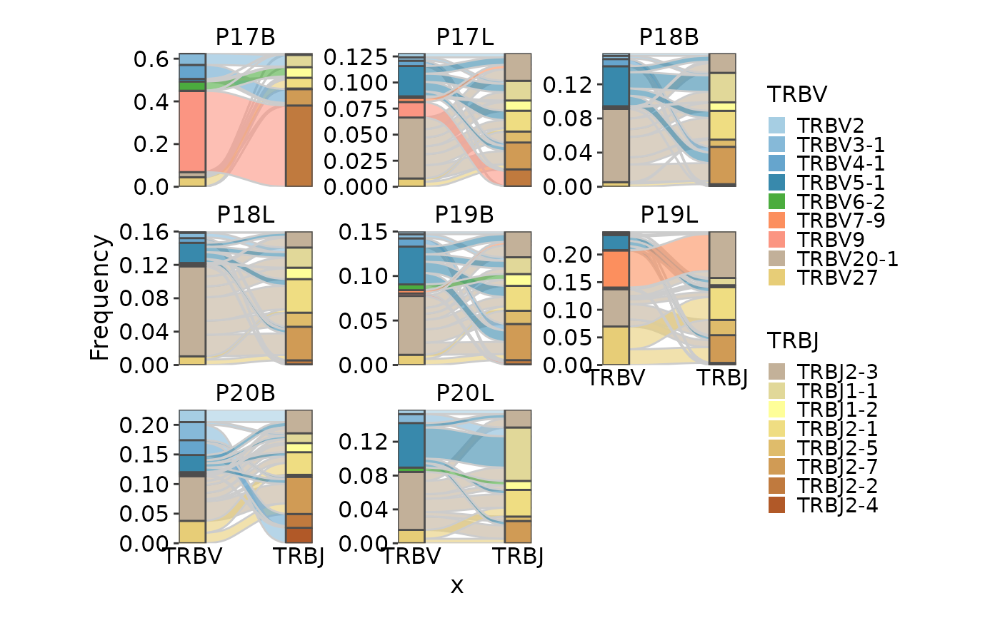
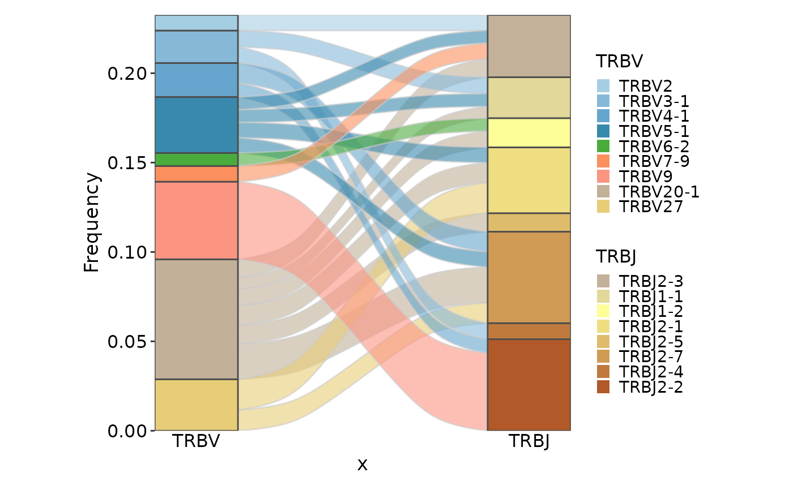

Adaptive immune receptors (TCRs and BCRs) are assembled through V(D)J recombination, where variable (V), diversity (D), and joining (J) gene segments are randomly selected and rearranged. The frequency with which different gene segments are used — termed gene usage — provides insight into immune repertoire composition, T/B cell development, and antigen-driven selection. Skewed gene usage can indicate clonal expansion, immune aging, or disease-associated repertoire bias.
Usage
ClonalGeneUsagePlot(
data,
genes = "TRBV",
scale = TRUE,
top = 20,
order = NULL,
plot_type = c("bar", "heatmap", "circos", "chord", "alluvial", "sankey"),
group_by = "Sample",
facet_by = NULL,
facet_ncol = 1,
split_by = NULL,
aspect.ratio = 2/top,
theme_args = list(),
ylab = NULL,
show_row_names = TRUE,
show_column_names = TRUE,
row_annotation = NULL,
...
)Arguments
- data
The product of
scRepertoire::combineTCR(),scRepertoire::combineBCR(), orscRepertoire::combineExpression(). Must contain columns with gene segment information (e.g., TRBV_, TRBJ_ for TCR beta chain).- genes
A character vector of gene segment prefixes to analyze. Default is
"TRBV". If a single prefix is provided (e.g.,"TRBV"), the second dimension of the plot will be thegroup_byvariable. If two prefixes are provided (e.g.,c("TRBV", "TRBJ")), both axes represent gene segments, revealing V-J pairing frequencies, andgroup_byis used for faceting. Must be of length 1 or 2.- scale
Logical; whether to normalize gene usage as proportions within each group (
TRUE, default), or display raw counts (FALSE). Settingscale = TRUEis recommended when comparing samples of different sequencing depths, as it accounts for differences in total clone counts. Raw counts may be preferred when absolute clone numbers are biologically meaningful.- top
Integer; the number of top genes (single gene mode) or top gene pairs (dual gene mode) to display. Genes are ranked by total usage across all groups. Default is
20. Increase this value to show more genes, or decrease it to focus on the most dominant segments.- order
A named list specifying the order of factor levels for grouping variables. For example,
list(Sample = c("P17B", "P17L"))orlist(Type = c("L", "B")). Default isNULL, which uses the order present in the data. Names in the list must match column names indata.- plot_type
Character; the type of visualization. One of
"bar"(default),"heatmap","circos","chord","alluvial", or"sankey". Note that"alluvial"and"sankey"are treated identically. See the Plot types section for guidance on selecting the appropriate visualization.- group_by
Character vector; the column(s) in
datato group by. Default is"Sample". For single gene analysis, this becomes the second dimension of the plot. For dual gene analysis, it is used for faceting. Set toNULLto disable grouping.- facet_by
A character vector of column names to facet the plots by. Default is
NULL. This parameter is typically set automatically by the function and should not be specified manually — providing a value will raise an error.- facet_ncol
Integer; the number of columns in the facet grid when faceting is applied. Default is
1. Only relevant for plot types that produce faceted output (e.g., sankey in dual gene mode).- split_by
A character vector of column names to split the plots by. Default is
NULL. When provided, separate plots are generated for each combination of values in the specified columns. For dual gene analysis,split_byis used in single gene mode; in dual gene mode, the plot is automatically split bygroup_byand specifyingsplit_bywill raise an error.- aspect.ratio
Numeric; the aspect ratio (height / width) of bar plot panels. Default is
2 / top, which automatically scales the ratio based on the number of genes displayed. Only applicable forplot_type = "bar".- theme_args
A named list of arguments passed to
ggplot2::theme()for customizing the plot appearance. For bar plots,panel.grid.major.ydefaults toelement_blank()for a cleaner look.- ylab
Character; the y-axis label. Default is
NULL, which automatically uses"Gene Usage Fraction"whenscale = TRUEor"Gene Usage Count"whenscale = FALSE.- show_row_names
Logical; whether to display row names (gene segment names) in the heatmap. Default is
TRUE. Set toFALSEto hide gene labels when there are too many to display legibly. Only applicable forplot_type = "heatmap".- show_column_names
Logical; whether to display column names (sample/ group names or second gene set names) in the heatmap. Default is
TRUE. Only applicable forplot_type = "heatmap".- row_annotation
A named list specifying row annotations for heatmap plots. Default is
NULL. When a single gene prefix is used, a"Total Usage"annotation is automatically added showing the aggregate usage per gene. Only applicable forplot_type = "heatmap".- ...
Additional arguments passed to the underlying plotthis visualization function, depending on
plot_type:For
"bar":plotthis::BarPlot()For
"heatmap":plotthis::Heatmap()For
"circos"/"chord":plotthis::ChordPlot()For
"alluvial"/"sankey":plotthis::SankeyPlot()
Common arguments include
title(plot title),legend.position, and color palette parameters. See the respective plotthis documentation for available options.
Details
ClonalGeneUsagePlot visualizes the usage frequency of TCR or BCR gene segments
across samples and conditions. It supports two modes of analysis:
Single gene analysis (
genes = "TRBV"): The second axis is thegroup_byvariable (typically Sample), producing a gene-by-sample matrix suitable for comparing usage across conditions.Dual gene analysis (
genes = c("TRBV", "TRBJ")): Both axes are gene segments, and thegroup_byvariable is used for faceting. This reveals preferential V-J pairings, which can reflect structural constraints in the receptor or antigen-driven selection for specific chain combinations.
Gene usage can be displayed as raw counts or as proportions scaled within each
group (when scale = TRUE), the latter being more appropriate for comparing
samples of different sequencing depths.
The function uses scRepertoire::vizGenes()
internally to compute gene usage frequencies, then passes the result to the
appropriate plotthis visualization function.
Note
Gene usage data is computed using
scRepertoire::vizGenes(), which requires the input data to contain gene segment columns (e.g.,TRBV_gene,TRBJ_gene). These columns are automatically created byscRepertoire::combineTCR()andscRepertoire::combineBCR().For bar plots,
aspect.ratiois automatically set to2 / topto accommodate varying numbers of genes. You can override this by passing a custom value.The
facet_byparameter is set internally by the function and should not be provided by the user. Doing so will raise an error.Dual gene analysis with
split_byin chord/circos mode is not supported — the plot is automatically split bygroup_byinstead.When using
scale = TRUE, proportions sum to 1 within each group for each gene set, making it possible to compare relative usage across groups of different sizes. However, this normalization can mask differences in absolute clone counts — usescale = FALSEwhen total clone numbers are of interest.Gene segment names follow IMGT nomenclature. Ensure your gene prefixes match the naming convention in your dataset (e.g.,
"TRBV"for human TRB V genes,"Trbv"for mouse).
Single vs. dual gene analysis
The genes parameter determines the dimensionality of the analysis:
Single gene prefix (e.g.,
"TRBV","TRBJ","IGHV"): The x-axis shows gene segments (e.g., TRBV5-1, TRBV7-2), and the y-axis (or columns in a heatmap) shows thegroup_byvariable, typically Sample. This is the standard mode for comparing gene usage across samples or conditions. Use a bar plot to quickly identify over- or under-represented genes, or a heatmap for a compact overview of many genes across many samples.Two gene prefixes (e.g.,
c("TRBV", "TRBJ")): The x-axis shows the first gene set and the y-axis (or columns) shows the second gene set. Each cell represents a specific V-J pair, and thegroup_byvariable is used for faceting. This mode is essential for studying chain pairing — certain V segments preferentially pair with specific J segments, and deviations from expected pairing frequencies can indicate structural constraints or disease-associated repertoire features. The sankey/alluvial plot type is particularly effective for dual gene analysis, showing the flow from one gene set to the other.
Plot types
Five visualization types are available, each suited to different analytical goals:
"bar"(default): Horizontal bar chart showing gene usage per sample/group. Best for comparing a moderate number of genes across a few samples. Gene labels are rotated 90 degrees for readability. Theaspect.ratioparameter controls bar height (defaults to2 / topto automatically scale with the number of genes)."heatmap": Matrix heatmap with genes on rows and samples/conditions on columns. Ideal for surveying many genes across many samples simultaneously. When a single gene prefix is used, a "Total Usage" row annotation is automatically added showing the aggregate usage per gene as a line plot. Supports custom row annotations, annotation types, and aggregation functions."circos"/"chord": Chord diagram showing flow from gene segments to samples (single gene) or from one gene set to another (dual gene). Chord diagrams excel at revealing broad patterns of connectivity. In dual gene mode, the plot is automatically split by thegroup_byvariable."alluvial"/"sankey": Sankey diagram showing the flow from gene segments to samples (single gene) or from one gene set to another (dual gene). Unlike chord diagrams, sankey diagrams preserve the ordering of categories and are often easier to read when there are many connections. In dual gene mode, the plot is faceted bygroup_by. Note that"alluvial"is automatically mapped to"sankey".
Gene segment naming
Gene segment prefixes follow standard IMGT nomenclature:
Human TCR:
TRBV,TRBD,TRBJ(beta chain);TRAV,TRAJ(alpha chain);TRGV,TRGJ(gamma chain);TRDV,TRDJ(delta chain)Human BCR:
IGHV,IGHD,IGHJ(heavy chain);IGKV,IGKJ(kappa chain);IGLV,IGLJ(lambda chain)Mouse: Prefixes are similar but use
Trbv,Ighv, etc. (sentence case)
The gene prefix is used to identify matching columns in the data. Only genes
matching the prefix will be included in the analysis. The top parameter
selects the most frequently used genes/genepairs for display.
See also
ClonalCompositionPlotfor analyzing clonal homeostasis and expansion/contraction compositionClonalDiversityPlotfor analyzing clonal diversity metricsClonalPositionalPlotfor analyzing amino acid positional distributions within CDR3 sequencesClonalKmerPlotfor analyzing k-mer motifs in CDR3 sequencesscRepertoire::vizGenes()for the underlying gene usage computation
Examples
# \donttest{
set.seed(8525)
data(contig_list, package = "scRepertoire")
data <- scRepertoire::combineTCR(contig_list,
samples = c("P17B", "P17L", "P18B", "P18L", "P19B","P19L", "P20B", "P20L"))
data <- scRepertoire::addVariable(data,
variable.name = "Type",
variables = factor(rep(c("B", "L"), 4), levels = c("L", "B"))
)
data <- scRepertoire::addVariable(data,
variable.name = "Subject",
variables = rep(c("P17", "P18", "P19", "P20"), each = 2)
)
ClonalGeneUsagePlot(data)

ClonalGeneUsagePlot(data, genes = c("TRBJ", "TRBV"))
#> Warning: Content-based width (6.9) conflicts with aspect.ratio (0.1). Using content width; plot panel aspect ratio will differ from specified.

ClonalGeneUsagePlot(data, top = 40, plot_type = "heatmap")

ClonalGeneUsagePlot(data, genes = c("TRBV", "TRBJ"), plot_type = "heatmap")

ClonalGeneUsagePlot(data, genes = "TRBV", group_by = "Type", plot_type = "chord")

ClonalGeneUsagePlot(data, genes = c("TRBV", "TRBJ"), group_by = "Type", plot_type = "chord")

ClonalGeneUsagePlot(data, genes = c("TRBV", "TRBJ"), plot_type = "alluvial",
facet_scales = "free_y")
#> Missing alluvia for some stratum combinations.

ClonalGeneUsagePlot(data, genes = c("TRBV", "TRBJ"), plot_type = "alluvial",
group_by = NULL)
#> Missing alluvia for some stratum combinations.

# }